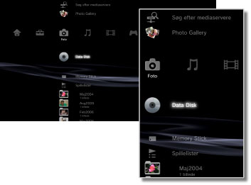

Foto > Fotokategori
Fotokategori
Følgende ikoner vises under  (Foto). De viste ikoner afhænger af brugsbetingelserne.
(Foto). De viste ikoner afhænger af brugsbetingelserne.

 |
Søg efter mediaservere | Dette ikon betyder, at du kan starte en søgning efter DLNA-medieservere, der er tilsluttet samme netværk. |
|---|---|---|
 |
Brug af Photo Gallery | Brug dette program til at forbedre visningen af fotos, der er gemt på et PS3™-system. |
 |
Gem skærmbillede | Gem skærmbilleder fra PlayStation®3 Formateret Software under spil. Denne valgmulighed er kun tilgængelig, når den software, der spilles, understøtter denne funktion. |
 |
Medieserver | Dette ikon betyder, at du kan oprette forbindelse til DLNA-medieservere og se gemte billeder. Det viste ikon afhænger af servertypen. |
  |
Data Disk | Dette ikon betyder, at du kan få vist billedfiler, der er gemt på kompatible optagemedier, f.eks. en cd-r eller dvd-r. |
 |
Memory Stick™ | Få vist billedfiler, der er gemt på Memory Stick™-medier.* |
 |
SD Memory Card | Få vist billedfiler, der er gemt på et SD-hukommelseskort.* |
 |
CompactFlash® | Få vist billedfiler, der er gemt på CompactFlash®.* |
 |
PSP™(PlayStation®Portable) | Få vist billedfiler, der er gemt på et PSP™-systems Memory Stick™-medie. |
 |
PSP™(PlayStation®Portable) | Få vist billedfiler, som er gemt i PSP™-go systemets systemlager. |
 |
Digital Kamera | Få vist billedfiler, der er gemt i et digitalkamera, som er kompatibelt med PS3™-systemet. |
 |
WALKMAN®/ATRAC Audio Device (WALKMAN®) | Dette ikon betyder, at du kan få vist billedfiler, der er gemt på en WALKMAN®/ATRAC Audio Device (WALKMAN®). |
 |
ATRAC Audio Device | Dette ikon betyder, at du kan få vist billedfiler, der er gemt på en ATRAC Audio Device. |
 |
USB enhed | Få vist billedfiler, der er gemt på en USB-masselagerenhed. |
 |
Spillelister | Dette ikon betyder, at du kan oprette spillelister eller redigere eller afspille oprettede spillelister. |
 |
Digitalkamera billeder | Få vist billedfiler, der er gemt i DCIM-mappen i et digitalkamera. |
|
(mappe) | Dette ikon vises, når der foreligger mapper, som er oprettet på en PC. |
 |
(filer gemt på harddisken) | Få vist billedfiler, der er gemt på PS3™-systemets harddisk. Der vises miniaturebilleder. |
| * |
Nogle modeller af PS3™-systemet kræver brug af USB-adapter (ekstraudstyr) for at kunne bruge lagringsmedier. Hvis lagermedier bruges sammen med en USB-adapter, vises de som |
|---|
 (USB enhed).
(USB enhed).Tips
- Yderligere oplysninger om DLNA findes i denne vejledning under
 (Indstillinger) >
(Indstillinger) >  (Netværksindstillinger) > [Mediaserverforbindelse].
(Netværksindstillinger) > [Mediaserverforbindelse]. - I sjældne tilfælde kan det ske, at diske eller andre medier ikke fungerer, når de afspilles på dit PS3™ system. Dette skyldes primært variationer i fremstillingsprocessen eller i softwarekodningen.